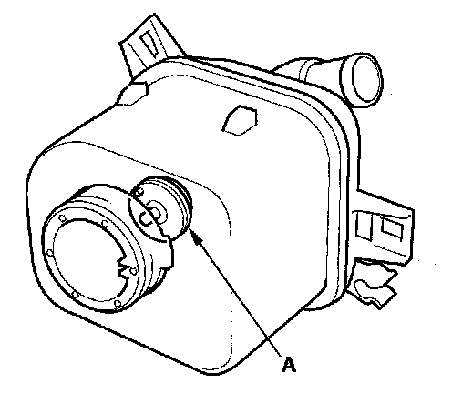
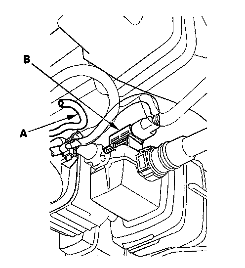
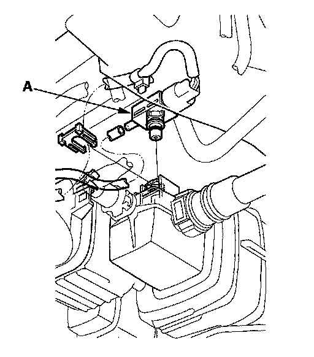

DTC Troubleshooting
DTC P1454: FTP Sensor Circuit Range/Performance ProblemDTC P2422: EVAP Canister Vent Shut Valve Close Malfunction
NOTE: Before you troubleshoot, record all freeze data and any on-board snapshot, and review the general troubleshooting information.
1. Turn the ignition switch ON (II).
2. Clear the DTC with the HDS.
3. Turn the ignition switch OFF.
4. Remove the fuel fill cap, and wait 1 minute.
5. Check the FTP SENSOR in the DATA LIST with the HDS.
Is it between -0.67 and 0.67 kPa (-0.2 and 0.2 in.Hg, -5 and 5 mmHg), or 2.4 and 2.6 V?
YES - Go to step 6.
NO - Go to step 17.
6. Install the fuel fill cap.
7. Clear the DTC with the HDS.
8. Start the engine, and then let it idle without load (in Park on neutral) until the radiator fan comes on.
9. Monitor the OBD STATUS for DTC P1454 in the DTCs MENU with the HDS.
Does the screen indicate FAILED?
YES - Go to step 10.
NO - If the screen indicates PASSED, intermittent failure, the system is OK at this time. Check for poor connections or loose terminals at the FTP sensor, the EVAP canister vent shut valve, and the PCM. If the screen indicates NOT COMPLETED, go to step 8 and recheck.
10. Clear the DTC with the HDS.
11. Turn the ignition switch OFF.
12. Remove the EVAP canister vent shut valve from the EVAP canister.
13. Connect the 2P connector to the EVAP canister vent shut valve.
14. Turn the ignition switch ON (II).
15. Select EVAP CVS ON in the INSPECTION MENU with the HDS.

16. Check the EVAP canister vent shut valve (A) operation.
Does the valve operate?
YES - Check for a blockage in the EVAP canister, canister filter, vent hoses, and drain joint, then install the EVAP canister vent shut valve, and go to step 23.
NO - Replace the EVAP canister vent shut valve, then go to step 23.

17. Disconnect the air tube (A) from the FTP sensor (B).
18. Check the FTP SENSOR in the DATA LIST with the HDS.
Is it between -0.67 and 0.67 kPa (-0.2 and 0.2 in.Hg, -5 and 5 mmHg), or 2.4 and 2.6 V?
YES - Check for a blockage in the FTP sensor air tube or vent, then go to step 23.
NO - Go to step 19.
19. Turn the ignition switch OFF.

20. Remove the FTP sensor (A) from the EVAP canister with its connector connected.
21. Turn the ignition switch ON (II).
22. Check the FTP SENSOR in the DATA LIST with the HDS.
Is it between -0.67 kPa and 0.67 kPa (-0.2 and 0.2 in.Hg, -5 and 5 mmHg), or 2.4 and 2.6 V?
YES - Check for debris or clogging at the EVAP canister and the FTP sensor port, then go to step 23.
NO - Replace the FTP sensor, then go to step 23.
23. Turn the ignition switch ON (II).
24. Reset the PCM with the HDS.
25. Do the PCM idle learn procedure.
26. Start the engine, and then let it idle without load (in Park or neutral) until the radiator fan comes on.
27. Check for Temporary DTCs or DTCs with the HDS.
Is DTC P1454 and/or P2422 indicated?
YES - Check for poor connections or loose terminals at the FTP sensor, the EVAP canister vent shut valve, and the PCM, then go to step 1.
NO - Go to step 28.
28. Monitor the OBD STATUS for DTC PI 454 and/or P2422 in the DTCs MENU with the HDS.
Does the screen indicate PASSED?
YES - Troubleshooting is complete. If any other Temporary DTCs or DTCs were indicated in step 27, go to the indicated DTCs troubleshooting.
NO - If the screen indicates FAILED, check for poor connections or loose terminals at the FTP sensor, the EVAP canister vent shut valve, and the PCM, then go to step 1. If the screen indicates NOT COMPLETED, keep idling until a result comes on.